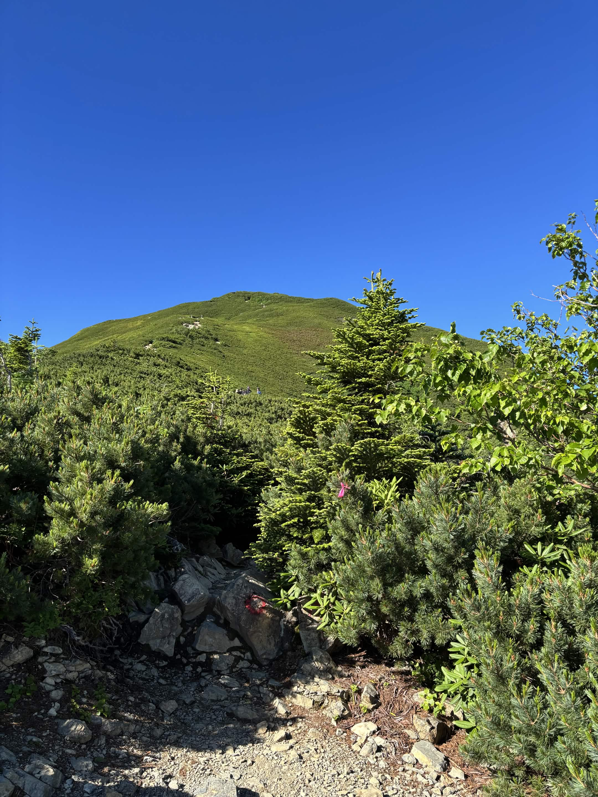
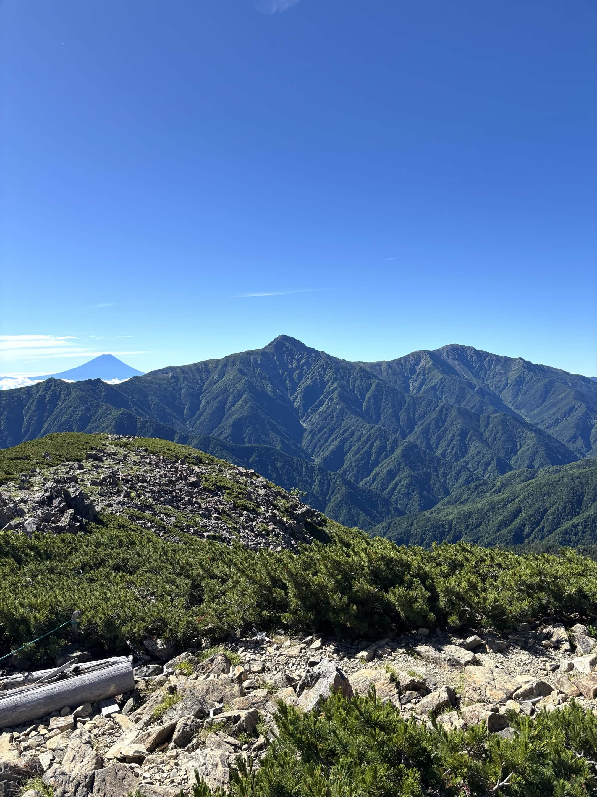
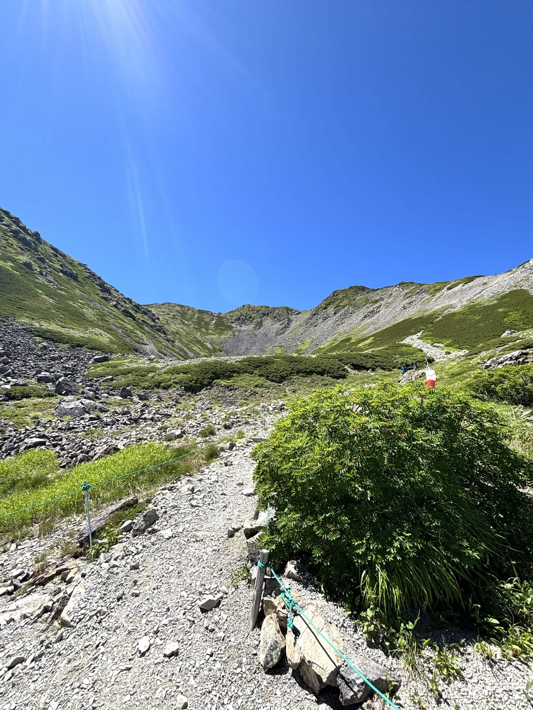

南アルプス
【南アルプス】南アルプスの女王、美しいカールを抱く仙丈ヶ岳日帰り登山
山行日: 2025.07.20

小仙丈ケ岳へと続く美しい稜線と、遥かに望む山々
山行データ＆評価
| 日程 |
2025年7月20日（登頂） |
| メンバー |
ソロ（なし） |
| 難易度（俺流10段階） |
技術力 2 / 体力度 4（北沢峠ピストン） |
| アクセス（片道目安） |
北沢峠 → 仙丈ヶ岳：約3時間 |
装備＆ギア
- 水・食料： 水3L、行動食それなり
- ギア： 珍しくストックを準備
- その他： 日帰り基本装備など

快晴の仙丈ヶ岳山頂。3,000mの山頂からは富士山や北岳を一望
山行記録＆ポイントまとめ
2022年に台風接近のため無念の撤退となった仙丈ヶ岳へ。今回はその雪辱を果たすリベンジ山行です。
- 最高のリベンジ日和： 当日は見事な快晴。山頂からは富士山、北岳、さらには遠く北アルプスまで見渡す大パノラマが広がっていました。
- 目標に向けたトレーニング： 8月に控える水晶岳攻略を見据え、しっかりと体力をつくるための着実なステップとなりました。

「南アルプスの女王」の名にふさわしい優美なカール地形
振り返りと次回への目標
かつての撤退から時間を経て、最高のコンディションで山頂を踏むことができました。富士山や北岳を望むダイナミックな景観を楽しみつつ、ストックを導入して快適な歩行を維持できたのも収穫です。
今回の山行で手応えと体力をしっかり得られたので、8月の本番・水晶岳攻略に向けて引き続き万全の準備を進めていきます！
← HOMEへ戻る